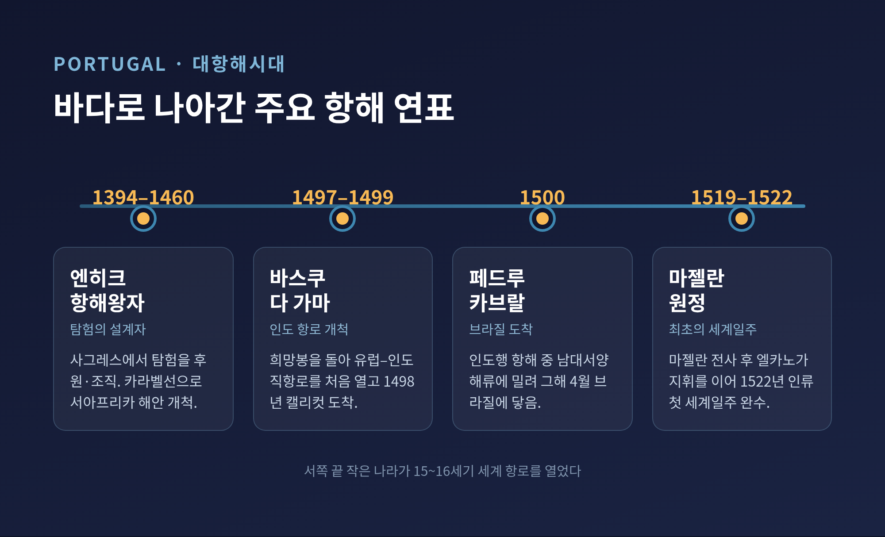
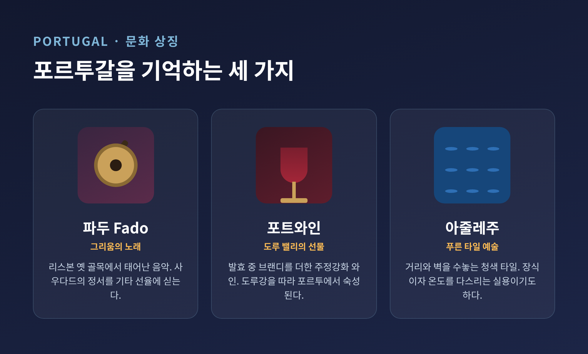
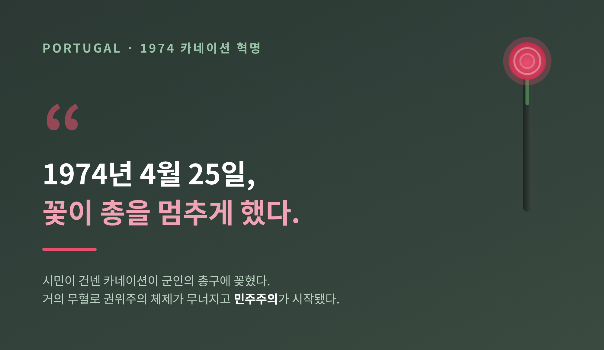

오늘은 포르투갈에 대해 이야기해 보려 합니다. 유럽 대륙의 가장 서쪽 끝, 대서양을 마주한 이 작은 나라가 어떻게 세계를 향한 바닷길을 열었는지부터 짚어보겠습니다. 대항해의 역사부터 파두와 포트와인, 그리고 카네이션 혁명까지 차례로 풀어보겠습니다.
포르투갈은 이베리아 반도의 서남부에 있습니다. 동쪽과 북쪽으로는 스페인과 국경을 접하고, 서쪽과 남쪽은 대서양에 면해 있습니다. 유럽 대륙에서 바다 쪽으로 가장 멀리 나가 있는 나라인 셈입니다.
리스본 서쪽에는 카보 다 로카가 있습니다. 유럽 대륙의 최서단 지점입니다. 이곳에 서면 더 이상 갈 육지가 없습니다. 앞에는 오직 대서양뿐입니다.
수도 리스본은 테주강 하구에 자리한 항구도시입니다. 테주강은 이베리아 반도에서 가장 긴 강으로, 스페인 중동부에서 발원해 약 1,007km를 흘러 리스본에서 대서양으로 빠집니다. 이 강어귀가 바로 대항해의 출발항이 되었습니다.
리스본은 포르투갈 본토 최대 도시입니다. 시 행정구역 기준 인구는 2024년 추정 약 57만 명, 리스본 대도시권으로 넓히면 약 300만 명에 이릅니다. 북쪽의 포르투는 시 기준 약 26만 명 규모의 도시로, 뒤에서 이야기할 포트와인의 이름이 여기서 유래했습니다.
15세기에서 16세기 초, 포르투갈은 항해와 탐험의 성과로 한때 세계에서 가장 번영한 나라 중 하나였습니다. 리스본 벨렝의 발견 기념비가 이 시대의 인물들을 기립니다.
이야기의 시작에는 엔히크 항해왕자가 있습니다. 1394년에 태어나 1460년에 세상을 떠난 인물입니다. 흔히 그가 직접 바다로 나선 것으로 오해하지만, 실제로는 사그레스를 중심으로 탐험을 후원하고 조직한 사람이었습니다. 그는 카라벨이라는 새 선박을 활용해 서아프리카 해안과 대서양 섬들을 체계적으로 탐험하게 했습니다.

그 뒤를 바스쿠 다 가마가 잇습니다. 1497년부터 1499년까지의 1차 항해로, 아프리카 희망봉을 돌아 유럽에서 인도까지 이어지는 직항 해로를 처음으로 열었습니다. 1498년 5월 20일에는 인도 서남부 캘리컷에 도착했습니다. 유럽과 인도를 잇는 바닷길이 처음으로 열린 순간이었고, 세계사의 전환점으로 평가받습니다.
페드루 알바르스 카브랄의 이야기는 조금 다릅니다. 그는 1500년 인도행 함대를 이끌고 리스본을 떠났습니다. 그런데 남대서양의 바람과 해류에 서쪽으로 밀려, 그해 4월 22일 브라질에 닿았습니다. 의도하지 않은 도착이었습니다. 이 일을 두고 흔히 "브라질 발견"이라 부르지만, 그곳에는 이미 원주민이 살고 있었습니다. 어디까지나 유럽 중심의 표현이라는 점은 기억해 둘 만합니다.
마지막으로 페르낭 드 마갈량이스, 영어식으로는 마젤란입니다. 포르투갈 출신이지만 스페인 왕의 후원을 받아 1519년 원정대를 이끌었습니다. 서쪽으로 돌아 향료제도에 닿으려는 시도였습니다. 그러나 그는 1521년 4월 27일 필리핀 막탄 전투에서 전사했습니다. 세계일주를 스스로 완성하지는 못한 것입니다. 그의 사후 후안 세바스티안 엘카노가 지휘를 이어, 1522년 스페인으로 돌아오며 인류 최초의 세계일주를 마쳤습니다. 약 240명에서 270명이 떠났으나 살아 돌아온 사람은 18명 남짓이었다고 전합니다. 바닷길의 영광은 그만큼 값비싼 것이었습니다.
바다로 나간 이들이 있다면, 남아 그들을 기다린 이들도 있었습니다. 그 마음을 담은 음악이 파두입니다.
파두는 1820년대 리스본에서 그 자취를 찾을 수 있는 음악 장르입니다. 알파마, 모라리아, 바이루 알투 같은 옛 동네의 선술집과 작은 모임에서 불렸습니다. 노래의 주제는 슬픔과 이별, 그리고 바다로 나간 이들의 운명이었습니다.

파두의 정서를 한 단어로 모으면 사우다드입니다. 그리움과 상실감을 뜻하는 포르투갈어로, 돌이킬 수 없는 것을 향한 평생의 아픔까지 담은 복합 감정입니다. 파두는 이 감정을 포르투갈 기타의 선율에 실어 풀어냅니다.
이 음악을 세계에 알린 사람은 아말리아 호드리게스입니다. "파두의 여왕"으로 불립니다. 파두는 2011년 11월 27일 유네스코 인류무형문화유산에 등재되었습니다.
포르투갈을 이야기할 때 포트와인을 빼놓기 어렵습니다. 북부 도루 밸리에서 생산되는 주정강화 와인으로, 발효 중에 브랜디를 더해 도수를 높이고 단맛을 남깁니다.
흥미로운 것은 그 기원입니다. 17세기, 영국 상인들이 긴 항해 동안 와인이 상하지 않도록 브랜디를 넣은 데서 비롯했습니다. 1703년 메수엔 조약 이후 영국에서 큰 인기를 얻었습니다. 1756년에는 포르투갈 왕실 헌장으로 생산 지역이 공식 획정되었습니다. 유럽에서 가장 오래된 와인 원산지 획정 지역입니다. 도루의 와인 산지 경관은 2001년 유네스코 세계유산에 올랐습니다.
와인은 도루강을 따라 운반되어 포르투 일대의 셀러에서 숙성됩니다. "포트"라는 이름이 항구도시 포르투에서 온 까닭입니다.
여기에 코르크 산업이 더해집니다. 포르투갈은 세계 최대 코르크 수출국입니다. 원료는 코르크참나무로, 껍질이 재생되는 덕에 한 나무가 최대 200년간 코르크를 내어 줍니다. 베어내지 않고도 거두는 자원인 셈입니다. 지속가능성의 모델로 꼽히는 이유가 여기 있습니다.
포르투갈의 거리를 걷다 보면 푸른 타일로 뒤덮인 벽을 자주 만납니다. 아줄레주입니다. 어원은 아랍어로 "윤나는 작은 돌"을 뜻합니다. 8세기 무어인이 이슬람의 타일 예술을 이베리아 반도에 전했고, 이후 마누엘 1세가 세비야와 알람브라 궁전의 타일에 감명받아 자신의 궁전에 들이면서 포르투갈에 자리 잡았습니다. 전래된 시기와 포르투갈 고유의 양식으로 발전한 시기는 구분해 보는 편이 정확합니다.
아줄레주는 장식이면서 동시에 실용이기도 합니다. 가옥의 온도를 조절하는 기능도 했습니다. 보기에 아름답고 살기에 이로운 타일인 셈입니다.
식탁으로 눈을 돌리면 바칼랴우가 있습니다. 소금에 절여 말린 대구입니다. 포르투갈에만 1,000가지가 넘는 조리법이 있다고 할 만큼 사랑받아, "충실한 친구"라는 별명까지 얻었습니다. 15세기 대항해시대에 항해자들이 멀리 뉴펀들랜드 인근 어장에 닿으면서 식문화에 정착했습니다. 가톨릭의 단식 규율로 육식을 금하는 날이 많았던 점도 대구가 식탁에 오른 배경입니다.
마지막은 현대사입니다. 1974년 4월 25일, 포르투갈에서 군사 행동이 일어나 오랜 권위주의 체제를 무너뜨렸습니다. 이른바 카네이션 혁명입니다.

무너진 체제는 에스타두 노부였습니다. 1933년 살라자르가 세운 권위주의 정권으로, 긴 식민지 전쟁으로 나라의 힘을 소진하고 있었습니다. 앙골라, 모잠비크, 기니비사우에서 이어진 전쟁에 환멸을 느낀 중견 장교들이 국군운동을 꾸려 거사를 일으켰습니다.
혁명의 이름은 한 장면에서 왔습니다. 시민들이 거리로 나와 환호할 때, 셀레스트 카에이루라는 식당 종업원이 군인들에게 카네이션을 나눠주었습니다. 군인들이 그 꽃을 총구에 꽂은 모습이 혁명의 상징이 되었습니다. 흔히 무혈 혁명이라 부르지만, 비밀경찰의 총격으로 민간인 네 명이 목숨을 잃었습니다. "거의 무혈"이라 하는 편이 더 정확합니다.
새벽 라디오로 송출된 신호곡과 함께 작전이 시작되었습니다. 결과는 분명했습니다. 포르투갈은 민주주의로 이행했고, 식민지 전쟁은 끝을 맺었습니다. 이후 아프리카의 식민지들은 빠르게 독립을 이루었습니다.
끝으로 한 마디만 더 드리겠습니다. 포르투갈은 더 갈 육지가 없는 자리에서 오히려 바다를 택한 나라였습니다.
끝이라 여긴 곳에서 길을 연다.
땅끝에 서 본 적 있으신지요. 그 앞이 막다른 길인지 새로운 항로인지는, 어쩌면 바라보는 사람의 마음에 달린 일인지도 모르겠습니다.